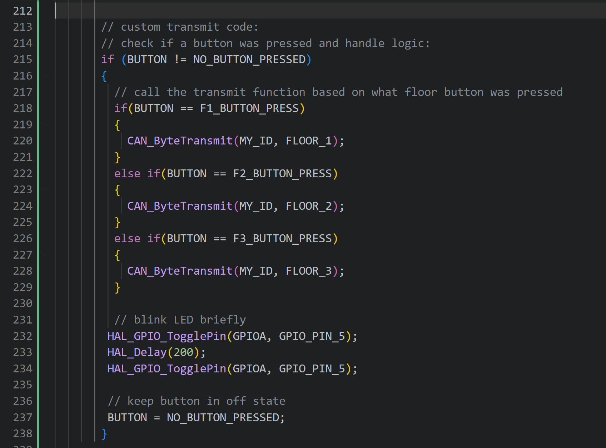
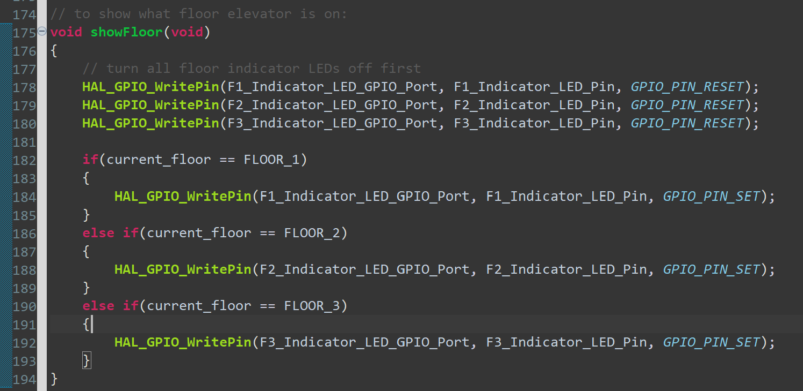
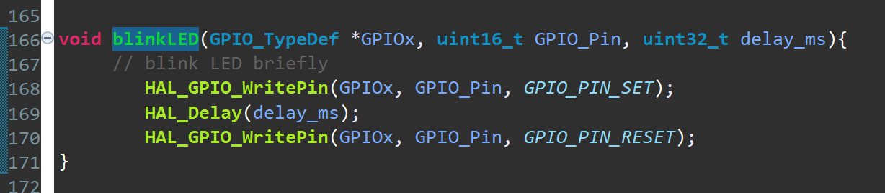
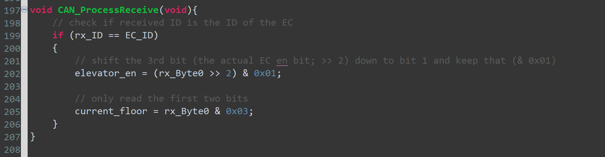

Programmed the STM shield buttons and LEDs, finished STM32 CAN communication code (transmit and receive); awaiting testing for CAN and LED/PBs via the STM shields
My logbook cover page- utilized a wrapper function to cleanly call the transmit logic in the main loop
- if button pressed, process the button within the function and call CAN_ByteTransmit() within button-handling function
- see the updated version of the transmit logic below:

- as the STM PCBs have 6 LEDs, wrote code to utilize them
- one function, blinkLED() takes GPIO register, GPIO pin, and the delay into it and passes these variables into HAL_GPIO_WritePin() to blink an LED for a specific pin with a specific delay
- the purpose of it is to be general blink LED use-case, but specifically to briefly blink the LEDs near the STM shield buttons as a visual showcase of input processing
- another function, showFloor() calls the same HAL_GPIO_WritePin() and updates the 3 other LEDs to actively show the floor the elevator is currently on
- this will sync across all STM32 shields and continiously show what floor the elevator is on - kind of how real elevators have the 7-segment displays that show what floor the elevator is on
- would like to ideally test this logic, and if functional, will make it update based on the current floor so that if the elevator is moving from floor 3 to 1, the floor 3 LED will glow, then floor 2, and finally floor 1 once the elevator arrives
- see both blinkLED() and showFloor() below:


- simple function to receive and process the message from the EC to the STM32s (as only the EC sends TO the STMs; the STMs send to the R-Pi)
- basically, reads the four bits that the EC sends and stores them into local variables to keep track of what's going on (utilized by showFloor())
- see the function below:
